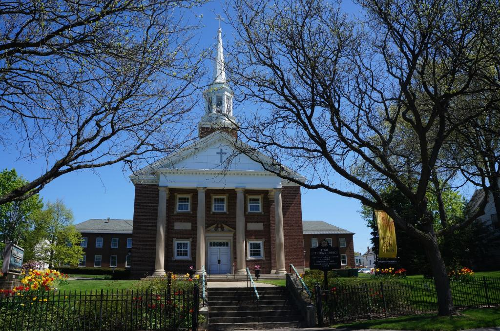
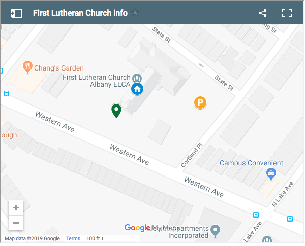
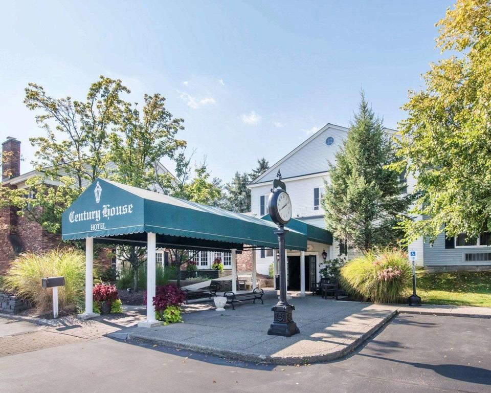
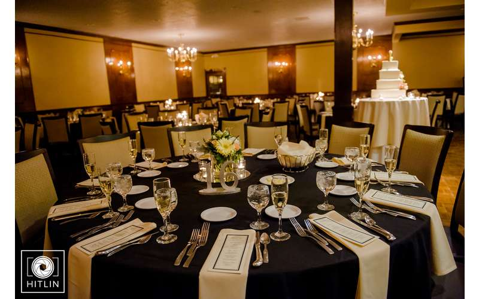
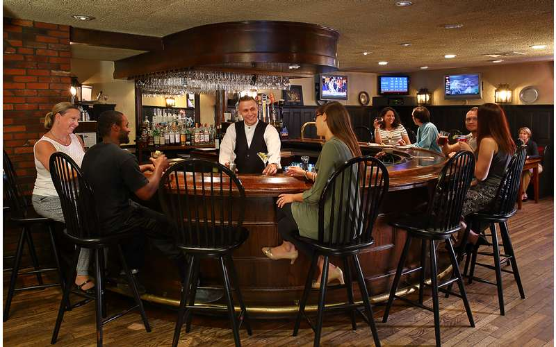
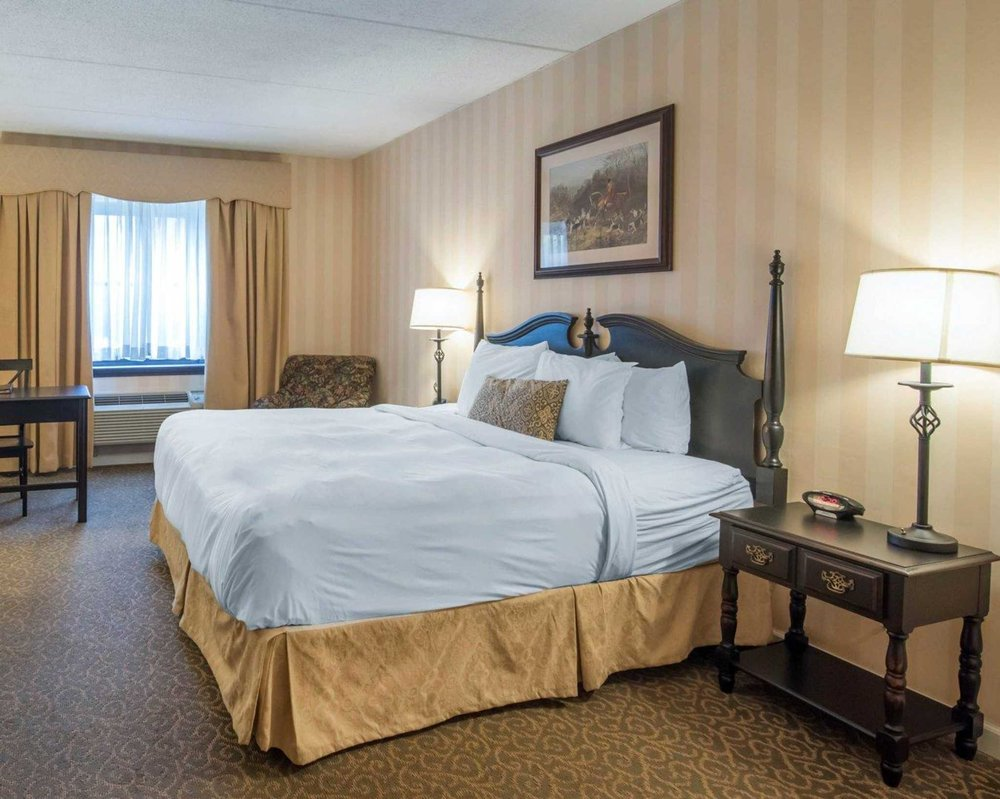

If you would like to attend the ceremony but did not receive an invitation, contact us.

Figure 5: First Lutheran Church (FLC) exteriorFigure 6: FLC location, parking, and entrance [map source]
There will be a reception at The Century House in Latham, NY starting at 3:00pm and ending at 8:00pm.
The reception is invitation only we are very sorry but space is limited.

Figure 7: The Century House exterior

Figure 8: a table inside the The Century HouseFigure 9: The Century House location, parking, and entrance [map source]
For the first hour of the reception, there will be appetizers and a full
liquor/beer/wine/soda bar.
Appetizers include: imported and domestic whole cheeses, fried chickpeas,
fresh vegetable crudité with herb dip, Century signature skillet cheese,
hummus, feta and pitted olives, charcuterie board, crostini and crackers,
slow roasted artichokes and tomatoes, pacific rim spread, shrimp shooter,
potato spoons, charcuters blanket, grilled cheese and tomato soup,
chili lime tacos, ahi tuna chips
For the last four hours of the reception, the beer/wine/soda is on us.
Liquor may be available for cash.

Figure 10: a bar at The Century House (your reception experience may vary)
We're planning to have short rib, macaroni & cheese, and vegetables for dinner.
If you want to book a room, use the discount code LWEDD.

Figure 11: a bed at The Century House
Here is a copy of the wedding invitations we sent out.